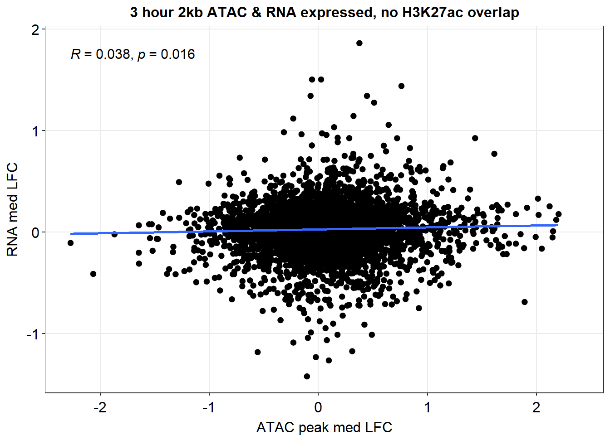
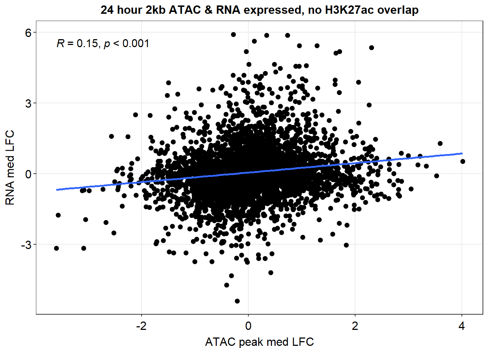

H3K27ac_data_integration
Renee Matthews
2025-05-09
Last updated: 2025-05-09
Checks: 7 0
Knit directory: ATAC_learning/
This reproducible R Markdown analysis was created with workflowr (version 1.7.1). The Checks tab describes the reproducibility checks that were applied when the results were created. The Past versions tab lists the development history.
Great! Since the R Markdown file has been committed to the Git repository, you know the exact version of the code that produced these results.
Great job! The global environment was empty. Objects defined in the global environment can affect the analysis in your R Markdown file in unknown ways. For reproduciblity it’s best to always run the code in an empty environment.
The command set.seed(20231016) was run prior to running
the code in the R Markdown file. Setting a seed ensures that any results
that rely on randomness, e.g. subsampling or permutations, are
reproducible.
Great job! Recording the operating system, R version, and package versions is critical for reproducibility.
Nice! There were no cached chunks for this analysis, so you can be confident that you successfully produced the results during this run.
Great job! Using relative paths to the files within your workflowr project makes it easier to run your code on other machines.
Great! You are using Git for version control. Tracking code development and connecting the code version to the results is critical for reproducibility.
The results in this page were generated with repository version f8970ec. See the Past versions tab to see a history of the changes made to the R Markdown and HTML files.
Note that you need to be careful to ensure that all relevant files for
the analysis have been committed to Git prior to generating the results
(you can use wflow_publish or
wflow_git_commit). workflowr only checks the R Markdown
file, but you know if there are other scripts or data files that it
depends on. Below is the status of the Git repository when the results
were generated:
Ignored files:
Ignored: .RData
Ignored: .Rhistory
Ignored: .Rproj.user/
Ignored: data/ACresp_SNP_table.csv
Ignored: data/ARR_SNP_table.csv
Ignored: data/All_merged_peaks.tsv
Ignored: data/CAD_gwas_dataframe.RDS
Ignored: data/CTX_SNP_table.csv
Ignored: data/Collapsed_expressed_NG_peak_table.csv
Ignored: data/DEG_toplist_sep_n45.RDS
Ignored: data/FRiP_first_run.txt
Ignored: data/Final_four_data/
Ignored: data/Frip_1_reads.csv
Ignored: data/Frip_2_reads.csv
Ignored: data/Frip_3_reads.csv
Ignored: data/Frip_4_reads.csv
Ignored: data/Frip_5_reads.csv
Ignored: data/Frip_6_reads.csv
Ignored: data/GO_KEGG_analysis/
Ignored: data/HF_SNP_table.csv
Ignored: data/Ind1_75DA24h_dedup_peaks.csv
Ignored: data/Ind1_TSS_peaks.RDS
Ignored: data/Ind1_firstfragment_files.txt
Ignored: data/Ind1_fragment_files.txt
Ignored: data/Ind1_peaks_list.RDS
Ignored: data/Ind1_summary.txt
Ignored: data/Ind2_TSS_peaks.RDS
Ignored: data/Ind2_fragment_files.txt
Ignored: data/Ind2_peaks_list.RDS
Ignored: data/Ind2_summary.txt
Ignored: data/Ind3_TSS_peaks.RDS
Ignored: data/Ind3_fragment_files.txt
Ignored: data/Ind3_peaks_list.RDS
Ignored: data/Ind3_summary.txt
Ignored: data/Ind4_79B24h_dedup_peaks.csv
Ignored: data/Ind4_TSS_peaks.RDS
Ignored: data/Ind4_V24h_fraglength.txt
Ignored: data/Ind4_fragment_files.txt
Ignored: data/Ind4_fragment_filesN.txt
Ignored: data/Ind4_peaks_list.RDS
Ignored: data/Ind4_summary.txt
Ignored: data/Ind5_TSS_peaks.RDS
Ignored: data/Ind5_fragment_files.txt
Ignored: data/Ind5_fragment_filesN.txt
Ignored: data/Ind5_peaks_list.RDS
Ignored: data/Ind5_summary.txt
Ignored: data/Ind6_TSS_peaks.RDS
Ignored: data/Ind6_fragment_files.txt
Ignored: data/Ind6_peaks_list.RDS
Ignored: data/Ind6_summary.txt
Ignored: data/Knowles_4.RDS
Ignored: data/Knowles_5.RDS
Ignored: data/Knowles_6.RDS
Ignored: data/LiSiLTDNRe_TE_df.RDS
Ignored: data/MI_gwas.RDS
Ignored: data/SNP_GWAS_PEAK_MRC_id
Ignored: data/SNP_GWAS_PEAK_MRC_id.csv
Ignored: data/SNP_gene_cat_list.tsv
Ignored: data/SNP_supp_schneider.RDS
Ignored: data/TE_info/
Ignored: data/TFmapnames.RDS
Ignored: data/all_TSSE_scores.RDS
Ignored: data/all_four_filtered_counts.txt
Ignored: data/aln_run1_results.txt
Ignored: data/anno_ind1_DA24h.RDS
Ignored: data/anno_ind4_V24h.RDS
Ignored: data/annotated_gwas_SNPS.csv
Ignored: data/background_n45_he_peaks.RDS
Ignored: data/cardiac_muscle_FRIP.csv
Ignored: data/cardiomyocyte_FRIP.csv
Ignored: data/col_ng_peak.csv
Ignored: data/cormotif_full_4_run.RDS
Ignored: data/cormotif_full_4_run_he.RDS
Ignored: data/cormotif_full_6_run.RDS
Ignored: data/cormotif_full_6_run_he.RDS
Ignored: data/cormotif_probability_45_list.csv
Ignored: data/cormotif_probability_45_list_he.csv
Ignored: data/cormotif_probability_all_6_list.csv
Ignored: data/cormotif_probability_all_6_list_he.csv
Ignored: data/datasave.RDS
Ignored: data/embryo_heart_FRIP.csv
Ignored: data/enhancer_list_ENCFF126UHK.bed
Ignored: data/enhancerdata/
Ignored: data/filt_Peaks_efit2.RDS
Ignored: data/filt_Peaks_efit2_bl.RDS
Ignored: data/filt_Peaks_efit2_n45.RDS
Ignored: data/first_Peaksummarycounts.csv
Ignored: data/first_run_frag_counts.txt
Ignored: data/full_bedfiles/
Ignored: data/gene_ref.csv
Ignored: data/gwas_1_dataframe.RDS
Ignored: data/gwas_2_dataframe.RDS
Ignored: data/gwas_3_dataframe.RDS
Ignored: data/gwas_4_dataframe.RDS
Ignored: data/gwas_5_dataframe.RDS
Ignored: data/high_conf_peak_counts.csv
Ignored: data/high_conf_peak_counts.txt
Ignored: data/high_conf_peaks_bl_counts.txt
Ignored: data/high_conf_peaks_counts.txt
Ignored: data/hits_files/
Ignored: data/hyper_files/
Ignored: data/hypo_files/
Ignored: data/ind1_DA24hpeaks.RDS
Ignored: data/ind1_TSSE.RDS
Ignored: data/ind2_TSSE.RDS
Ignored: data/ind3_TSSE.RDS
Ignored: data/ind4_TSSE.RDS
Ignored: data/ind4_V24hpeaks.RDS
Ignored: data/ind5_TSSE.RDS
Ignored: data/ind6_TSSE.RDS
Ignored: data/initial_complete_stats_run1.txt
Ignored: data/left_ventricle_FRIP.csv
Ignored: data/median_24_lfc.RDS
Ignored: data/median_3_lfc.RDS
Ignored: data/mergedPeads.gff
Ignored: data/mergedPeaks.gff
Ignored: data/motif_list_full
Ignored: data/motif_list_n45
Ignored: data/motif_list_n45.RDS
Ignored: data/multiqc_fastqc_run1.txt
Ignored: data/multiqc_fastqc_run2.txt
Ignored: data/multiqc_genestat_run1.txt
Ignored: data/multiqc_genestat_run2.txt
Ignored: data/my_hc_filt_counts.RDS
Ignored: data/my_hc_filt_counts_n45.RDS
Ignored: data/n45_bedfiles/
Ignored: data/n45_files
Ignored: data/other_papers/
Ignored: data/peakAnnoList_1.RDS
Ignored: data/peakAnnoList_2.RDS
Ignored: data/peakAnnoList_24_full.RDS
Ignored: data/peakAnnoList_24_n45.RDS
Ignored: data/peakAnnoList_3.RDS
Ignored: data/peakAnnoList_3_full.RDS
Ignored: data/peakAnnoList_3_n45.RDS
Ignored: data/peakAnnoList_4.RDS
Ignored: data/peakAnnoList_5.RDS
Ignored: data/peakAnnoList_6.RDS
Ignored: data/peakAnnoList_Eight.RDS
Ignored: data/peakAnnoList_full_motif.RDS
Ignored: data/peakAnnoList_n45_motif.RDS
Ignored: data/siglist_full.RDS
Ignored: data/siglist_n45.RDS
Ignored: data/summarized_peaks_dataframe.txt
Ignored: data/summary_peakIDandReHeat.csv
Ignored: data/test.list.RDS
Ignored: data/testnames.txt
Ignored: data/toplist_6.RDS
Ignored: data/toplist_full.RDS
Ignored: data/toplist_full_DAR_6.RDS
Ignored: data/toplist_n45.RDS
Ignored: data/trimmed_seq_length.csv
Ignored: data/unclassified_full_set_peaks.RDS
Ignored: data/unclassified_n45_set_peaks.RDS
Ignored: data/xstreme/
Untracked files:
Untracked: RNA_seq_integration.Rmd
Untracked: analysis/Diagnosis-tmm.Rmd
Untracked: analysis/Expressed_RNA_associations.Rmd
Untracked: analysis/H3K27ac_cormotif.Rmd
Untracked: analysis/LFC_corr.Rmd
Untracked: analysis/SVA.Rmd
Untracked: analysis/Tan2020.Rmd
Untracked: analysis/making_master_peaks_list.Rmd
Untracked: analysis/my_hc_filt_counts.csv
Untracked: code/IGV_snapshot_code.R
Untracked: code/LongDARlist.R
Untracked: code/just_for_Fun.R
Untracked: output/cormotif_probability_45_list.csv
Untracked: output/cormotif_probability_all_6_list.csv
Untracked: setup.RData
Unstaged changes:
Modified: ATAC_learning.Rproj
Modified: analysis/H3K27ac_initial_QC.Rmd
Modified: analysis/Jaspar_motif.Rmd
Modified: analysis/Jaspar_motif_ff.Rmd
Modified: analysis/RNA_seq_integration.Rmd
Modified: analysis/final_four_analysis.Rmd
Note that any generated files, e.g. HTML, png, CSS, etc., are not included in this status report because it is ok for generated content to have uncommitted changes.
These are the previous versions of the repository in which changes were
made to the R Markdown (analysis/H3K27ac_integration.Rmd)
and HTML (docs/H3K27ac_integration.html) files. If you’ve
configured a remote Git repository (see ?wflow_git_remote),
click on the hyperlinks in the table below to view the files as they
were in that past version.
| File | Version | Author | Date | Message |
|---|---|---|---|---|
| Rmd | f8970ec | reneeisnowhere | 2025-05-09 | updates to analysis |
library(tidyverse)
library(kableExtra)
library(broom)
library(RColorBrewer)
library(ChIPseeker)
library("TxDb.Hsapiens.UCSC.hg38.knownGene")
library(rtracklayer)
library(edgeR)
library(limma)
library(readr)
library(BiocGenerics)
library(gridExtra)
library(VennDiagram)
library(scales)
library(BiocParallel)
library(ggpubr)
library(devtools)
library(eulerr)
library(genomation)
library(ggsignif)
library(plyranges)
library(ggrepel)
library(ComplexHeatmap)
library(smplot2)
library(stringr)
library(cowplot)Integrating ATAC seq and H3K27ac CUT&Tag-seq together
Loading data frames
Collapsed_peaks <- read_delim("data/Final_four_data/collapsed_new_peaks.txt",
delim = "\t",
escape_double = FALSE,
trim_ws = TRUE)
Motif_list_gr <- readRDS("data/Final_four_data/re_analysis/Motif_list_granges.RDS")
##order specific
df_list <- plyr::llply(Motif_list_gr, as.data.frame)
### no change motif_list_gr names so they do not overwrite the dataframes
names(Motif_list_gr) <- paste0(names(Motif_list_gr), "_gr")
list2env(Motif_list_gr,envir= .GlobalEnv)<environment: R_GlobalEnv>list2env(df_list,envir= .GlobalEnv)<environment: R_GlobalEnv>final_peaks_gr <- Collapsed_peaks %>%
dplyr::filter(Peakid %in% mcols(all_regions_gr)$Peakid) %>%
GRanges()
final_peaks <- Collapsed_peaks %>%
dplyr::filter(Peakid %in% mcols(all_regions_gr)$Peakid)
mrc_lookup <- bind_rows(
(EAR_open %>% dplyr::select(Peakid) %>% mutate(mrc = "EAR_open")),
(EAR_close %>% dplyr::select(Peakid) %>%mutate(mrc = "EAR_close")),
(ESR_open %>% dplyr::select(Peakid) %>%mutate(mrc = "ESR_open")),
(ESR_close %>% dplyr::select(Peakid) %>%mutate(mrc = "ESR_close")),
(ESR_opcl %>% dplyr::select(Peakid) %>%mutate(mrc = "ESR_opcl")),
(ESR_clop %>% dplyr::select(Peakid) %>%mutate(mrc = "ESR_clop")),
(LR_open %>% dplyr::select(Peakid) %>%mutate(mrc = "LR_open")),
(LR_close %>% dplyr::select(Peakid) %>%mutate(mrc = "LR_close")),
(NR %>% dplyr::select(Peakid) %>%mutate(mrc = "NR"))
) %>%
distinct(Peakid, mrc)
RNA_exp_genes <- read.csv("data/other_papers/S13Table_Matthews2024.csv") %>%
dplyr::select(ENTREZID,SYMBOL)
# write_csv(median_3_lfc, "data/Final_four_data/re_analysis/median_3_lfc_H3K27ac_norm.csv")
# write_csv(median_24_lfc, "data/Final_four_data/re_analysis/median_24_lfc_H3K27ac_norm.csv")
# write_csv(median_3_lfc, "data/Final_four_data/re_analysis/median_3_lfc_norm.csv")
# write_csv(median_24_lfc, "data/Final_four_data/re_analysis/median_24_lfc_norm.csv")
H3K27ac_gr <- readRDS("data/Final_four_data/re_analysis/H3K27ac_granges_df.RDS")Overlapping data sets
When doing the overlapping, ATAC regions are labeled with Peakid, H3K27ac regions are labeled with Geneid
ol_peaks <- join_overlap_intersect(final_peaks_gr, H3K27ac_gr)
ATAC_region_count <- ol_peaks %>%
as.data.frame() %>%
distinct(Peakid)
H3K27ac_region_count <- ol_peaks %>%
as.data.frame() %>%
distinct(Geneid)
Overlap_regions <- ol_peaks %>%
as.data.frame() %>%
distinct(Peakid,Geneid)Number of ATAC regions: 155557
Number of ATAC regions overlapping H3K27ac regions:22760 14.63% of ATAC
peaks overlap an acetylated region.
Number of H3K27ac regions: 20137
Number of ATAC regions overlapping H3K27ac regions:19894 98.79% of
H3K27ac peaks overlap an acetylated region.
Looking at correlation of LFC H3K27ac regions and LFC ATAC regions
H3K27ac_toplist_results <- readRDS("data/Final_four_data/re_analysis/Toptable_results_H3K27ac_data.RDS")
H3K27ac_toptable_list <- bind_rows(H3K27ac_toplist_results, .id = "group")
ATAC_toptable_results <- readRDS("data/Final_four_data/re_analysis/Toptable_results.RDS")
ATAC_toptable_list <- bind_rows(ATAC_toptable_results, .id = "group")
hr3_K27 <- H3K27ac_toptable_list %>%
separate_wider_delim(., group, names=c("trt","time"), delim="_") %>%
dplyr::select(trt,time:logFC) %>%
dplyr::filter(time=="3") %>%
pivot_wider(., id_cols=c(genes), names_from = trt, values_from = logFC) %>%
dplyr::rename(DOX_3_K27=DOX, DNR_3_K27=DNR,EPI_3_K27=EPI,MTX_3_K27=MTX)
hr24_K27 <- H3K27ac_toptable_list %>%
separate_wider_delim(., group, names=c("trt","time"), delim="_") %>%
dplyr::select(trt,time:logFC) %>%
dplyr::filter(time=="24") %>%
pivot_wider(., id_cols=c(genes), names_from = trt, values_from = logFC) %>%
dplyr::rename(DOX_24_K27=DOX, DNR_24_K27=DNR,EPI_24_K27=EPI,MTX_24_K27=MTX)
K27_LFC_df <- hr3_K27 %>%
left_join(., hr24_K27, by=c("genes"="genes"))
hr3_ATAC <- ATAC_toptable_list %>%
dplyr::select(group:logFC) %>%
separate_wider_delim(., group, names=c("trt","time"), delim="_") %>%
dplyr::filter(time=="3") %>%
pivot_wider(., id_cols=c(time, genes), names_from = trt, values_from = logFC) %>%
dplyr::select(!TRZ) %>%
dplyr::rename(DOX_3_ATAC=DOX, DNR_3_ATAC=DNR,EPI_3_ATAC=EPI,MTX_3_ATAC=MTX) %>%
dplyr::rename("peak"=genes)
hr24_ATAC <- ATAC_toptable_list %>%
dplyr::select(group:logFC) %>%
separate_wider_delim(., group, names=c("trt","time"), delim="_") %>%
dplyr::filter(time=="24") %>%
pivot_wider(., id_cols=c(time, genes), names_from = trt, values_from = logFC) %>%
dplyr::select(!TRZ) %>%
dplyr::rename(DOX_24_ATAC=DOX, DNR_24_ATAC=DNR,EPI_24_ATAC=EPI,MTX_24_ATAC=MTX) %>%
dplyr::rename("peak"=genes)
ATAC_LFC_df <- hr3_ATAC %>%
left_join(., hr24_ATAC, by=c("peak"="peak")) %>%
dplyr::select(!time.x) %>%
dplyr::select(!time.y)K27_ATAC_mat <- Overlap_regions %>%
left_join(.,ATAC_LFC_df,by=c("Peakid"="peak")) %>%
left_join(.,K27_LFC_df, by=c("Geneid"="genes")) %>%
distinct(Peakid,Geneid,.keep_all = TRUE) %>%
tidyr::unite(name,Peakid:Geneid, sep="_") %>%
column_to_rownames("name") %>%
as.matrix()
pearson_cor_mat <- cor(K27_ATAC_mat,method = "pearson", use = "pairwise.complete.obs")
## do spearman correlation between matched observation of RNA and ATAC
spearman_cor_mat <- cor(K27_ATAC_mat,method = "spearman", use = "pairwise.complete.obs")
### make correlation heatmaps of both sets
ComplexHeatmap::Heatmap(pearson_cor_mat,
column_title = "Pearson H3K27ac/ATAC LFC correlation")
ComplexHeatmap::Heatmap(spearman_cor_mat,
column_title = "Spearman H3K27ac/ATAC LFC correlation") ### Integration of RNA, ATAC, and H3K27ac data together
### Integration of RNA, ATAC, and H3K27ac data together
I associated the data together like this: 1) Take the list of all ATAC regions that overlap H3K27ac regions 2) Join the overlap list of regions with the assigned RNA expressed genes and their distance.
toplistall_RNA <- readRDS("data/other_papers/toplistall_RNA.RDS") %>%
mutate(logFC = logFC*(-1))
hr3_RNA <- toplistall_RNA %>%
dplyr::select(time:logFC) %>%
dplyr::filter(time=="3_hours") %>%
pivot_wider(., id_cols=c(ENTREZID,SYMBOL), names_from = id, values_from = logFC) %>%
dplyr::select(!TRZ) %>%
dplyr::rename(DOX_3_RNA=DOX, DNR_3_RNA=DNR,EPI_3_RNA=EPI,MTX_3_RNA=MTX)
hr24_RNA <- toplistall_RNA %>%
dplyr::select(time:logFC) %>%
dplyr::filter(time=="24_hours") %>%
pivot_wider(., id_cols=c(ENTREZID,SYMBOL), names_from = id, values_from = logFC) %>%
dplyr::select(!TRZ) %>%
dplyr::rename(DOX_24_RNA=DOX, DNR_24_RNA=DNR,EPI_24_RNA=EPI,MTX_24_RNA=MTX)
RNA_LFC_df <- hr3_RNA %>%
left_join(., hr24_RNA, by=c("SYMBOL"="SYMBOL","ENTREZID"="ENTREZID")) All_data_overlaps <- Overlap_regions %>%
left_join(., (final_peaks %>%
dplyr::select (Peakid,NCBI_gene:dist_to_NG)),
by=c("Peakid"= "Peakid")) %>%
# mutate(NCBI_gene = gsub("[:,]", ";", NCBI_gene),
# SYMBOL = gsub("[:,]", ";", SYMBOL)) %>%
# separate_longer_delim(NCBI_gene, delim = ";") %>%
# separate_longer_delim(SYMBOL, delim = ";") %>%
left_join(.,ATAC_LFC_df,by=c("Peakid"="peak")) %>%
left_join(.,K27_LFC_df, by=c("Geneid"="genes")) %>%
left_join(., RNA_LFC_df, by = c("SYMBOL"="SYMBOL", "NCBI_gene"="ENTREZID"))
Only_2kb_ATAC_K27_RNA <- All_data_overlaps %>%
dplyr::filter(dist_to_NG > -2000 & dist_to_NG < 2000)
All_data_mat <- All_data_overlaps %>%
tidyr::unite(name, Peakid:dist_to_NG, sep="_") %>%
column_to_rownames(., "name") %>%
as.matrix()
All_data_2kb_mat <- Only_2kb_ATAC_K27_RNA %>%
tidyr::unite(name, Peakid:dist_to_NG, sep="_") %>%
column_to_rownames(., "name") %>%
as.matrix()Looking at correlations of all overlaps, irrespective of distance of region from expressed gene
pearson_cor_mat_all <- cor(All_data_mat,method = "pearson", use = "pairwise.complete.obs")
## do spearman correlation between matched observation of RNA and ATAC
spearman_cor_mat_all <- cor(All_data_mat,method = "spearman", use = "pairwise.complete.obs")
### make correlation heatmaps of both sets
ComplexHeatmap::Heatmap(pearson_cor_mat_all,
column_title = "Pearson RNA/ATAC/H3K27ac LFC correlation")ComplexHeatmap::Heatmap(spearman_cor_mat_all,
column_title = "Spearman RNA/ATAC/H3K27ac LFC correlation")pearson_cor_mat_2kb <- cor(All_data_2kb_mat,method = "pearson", use = "pairwise.complete.obs")
## do spearman correlation between matched observation of RNA and ATAC
spearman_cor_mat_2kb <- cor(All_data_2kb_mat,method = "spearman", use = "pairwise.complete.obs")
### make correlation heatmaps of both sets
ComplexHeatmap::Heatmap(pearson_cor_mat_2kb,
column_title = "Pearson RNA/ATAC/H3K27ac LFC correlation using +/- 2 kb from TSS ")
ComplexHeatmap::Heatmap(spearman_cor_mat_2kb,
column_title = "Spearman RNA/ATAC/H3K27ac LFC correlation using +/- 2 kb from TSS ")
Looking at correlation of median LFC between H3K27ac and ATAC shared regions
H3K27_med_3 <- read_csv("data/Final_four_data/re_analysis/median_3_lfc_H3K27ac_norm.csv") %>%
dplyr::select(H3K27ac_peak,med_Kac_3h_lfc)
H3K27_med_24 <- read_csv("data/Final_four_data/re_analysis/median_24_lfc_H3K27ac_norm.csv")%>%
dplyr::select(H3K27ac_peak,med_Kac_24h_lfc)
ATAC_med_3 <- read_csv("data/Final_four_data/re_analysis/median_3_lfc_norm.csv")%>%
dplyr::select(peak,med_3h_lfc)
ATAC_med_24 <- read_csv("data/Final_four_data/re_analysis/median_24_lfc_norm.csv")%>%
dplyr::select(peak,med_24h_lfc)
RNA_median_3 <- readRDS("data/other_papers/RNA_median_3_lfc.RDS") %>%
dplyr::select(RNA_3h_lfc,ENTREZID)
RNA_median_24 <- readRDS("data/other_papers/RNA_median_24_lfc.RDS") %>%
dplyr::select(RNA_24h_lfc,ENTREZID)Median_df_2kb <- Only_2kb_ATAC_K27_RNA %>%
dplyr::select(Peakid, Geneid,NCBI_gene) %>%
mutate(NCBI_gene = gsub("[:,]", ";", NCBI_gene)) %>%
separate_longer_delim(NCBI_gene, delim = ";") %>%
distinct() %>%
left_join(H3K27_med_3,by = c("Geneid"="H3K27ac_peak")) %>%
left_join(H3K27_med_24,by = c("Geneid"="H3K27ac_peak")) %>%
left_join(ATAC_med_3,by = c("Peakid"="peak")) %>%
left_join(ATAC_med_24,by = c("Peakid"="peak")) %>%
left_join(RNA_median_3, by = c("NCBI_gene"="ENTREZID")) %>%
left_join(RNA_median_24, by = c("NCBI_gene"="ENTREZID")) Median_df_2kb %>%
ggplot(., aes(y=med_Kac_3h_lfc, x=med_3h_lfc))+
geom_point()+
sm_statCorr(corr_method = 'pearson')+
ggtitle("Correlation of 2kb ATAC regions and H3K27ac regions 3 hours")+
xlab("ATAC peak med LFC")+
ylab("H3K27ac med LFC")
Median_df_2kb %>%
ggplot(., aes(y=med_Kac_24h_lfc, x=med_24h_lfc))+
geom_point()+
sm_statCorr(corr_method = 'pearson')+
ggtitle("Correlation of 2kb ATAC regions and H3K27ac regions 24 hours")+
xlab("ATAC peak med LFC")+
ylab("H3K27ac med LFC")
Median_df_2kb %>%
ggplot(., aes(y=RNA_3h_lfc, x=med_3h_lfc))+
geom_point()+
sm_statCorr(corr_method = 'pearson')+
ggtitle("Correlation of 2kb ATAC regions and RNA expressed genes 3 hours")+
xlab("ATAC peak med LFC")+
ylab("RNA med LFC")
Median_df_2kb %>%
ggplot(., aes(y=RNA_24h_lfc, x=med_24h_lfc))+
geom_point()+
sm_statCorr(corr_method = 'pearson')+
ggtitle("Correlation of 2kb ATAC regions and RNA expressed genes 24 hours")+
xlab("ATAC peak med LFC")+
ylab("RNA med LFC")
no_H3K27ac_overlap <- final_peaks %>%
dplyr::filter(!Peakid %in% Overlap_regions$Peakid) %>%
dplyr::select (Peakid,NCBI_gene:dist_to_NG) %>%
left_join(ATAC_med_3,by = c("Peakid"="peak")) %>%
left_join(ATAC_med_24,by = c("Peakid"="peak")) %>%
left_join(RNA_median_3, by = c("NCBI_gene"="ENTREZID")) %>%
left_join(RNA_median_24, by = c("NCBI_gene"="ENTREZID")) %>%
dplyr::filter(dist_to_NG > -2000 & dist_to_NG < 2000)
no_H3K27ac_overlap %>%
ggplot(., aes(y=RNA_3h_lfc, x=med_3h_lfc))+
geom_point()+
sm_statCorr(corr_method = 'pearson')+
ggtitle("3 hour 2kb ATAC & RNA expressed, no H3K27ac overlap")+
xlab("ATAC peak med LFC")+
ylab("RNA med LFC")
no_H3K27ac_overlap %>%
ggplot(., aes(y=RNA_24h_lfc, x=med_24h_lfc))+
geom_point()+
sm_statCorr(corr_method = 'pearson')+
ggtitle("24 hour 2kb ATAC & RNA expressed, no H3K27ac overlap")+
xlab("ATAC peak med LFC")+
ylab("RNA med LFC")
sessionInfo()R version 4.4.2 (2024-10-31 ucrt)
Platform: x86_64-w64-mingw32/x64
Running under: Windows 11 x64 (build 26100)
Matrix products: default
locale:
[1] LC_COLLATE=English_United States.utf8
[2] LC_CTYPE=English_United States.utf8
[3] LC_MONETARY=English_United States.utf8
[4] LC_NUMERIC=C
[5] LC_TIME=English_United States.utf8
time zone: America/Chicago
tzcode source: internal
attached base packages:
[1] grid stats4 stats graphics grDevices utils datasets
[8] methods base
other attached packages:
[1] cowplot_1.1.3
[2] smplot2_0.2.5
[3] ComplexHeatmap_2.22.0
[4] ggrepel_0.9.6
[5] plyranges_1.26.0
[6] ggsignif_0.6.4
[7] genomation_1.38.0
[8] eulerr_7.0.2
[9] devtools_2.4.5
[10] usethis_3.1.0
[11] ggpubr_0.6.0
[12] BiocParallel_1.40.0
[13] scales_1.3.0
[14] VennDiagram_1.7.3
[15] futile.logger_1.4.3
[16] gridExtra_2.3
[17] edgeR_4.4.2
[18] limma_3.62.2
[19] rtracklayer_1.66.0
[20] TxDb.Hsapiens.UCSC.hg38.knownGene_3.20.0
[21] GenomicFeatures_1.58.0
[22] AnnotationDbi_1.68.0
[23] Biobase_2.66.0
[24] GenomicRanges_1.58.0
[25] GenomeInfoDb_1.42.3
[26] IRanges_2.40.1
[27] S4Vectors_0.44.0
[28] BiocGenerics_0.52.0
[29] ChIPseeker_1.42.1
[30] RColorBrewer_1.1-3
[31] broom_1.0.7
[32] kableExtra_1.4.0
[33] lubridate_1.9.4
[34] forcats_1.0.0
[35] stringr_1.5.1
[36] dplyr_1.1.4
[37] purrr_1.0.4
[38] readr_2.1.5
[39] tidyr_1.3.1
[40] tibble_3.2.1
[41] ggplot2_3.5.1
[42] tidyverse_2.0.0
[43] workflowr_1.7.1
loaded via a namespace (and not attached):
[1] fs_1.6.5
[2] matrixStats_1.5.0
[3] bitops_1.0-9
[4] enrichplot_1.26.6
[5] httr_1.4.7
[6] doParallel_1.0.17
[7] profvis_0.4.0
[8] tools_4.4.2
[9] backports_1.5.0
[10] R6_2.6.1
[11] mgcv_1.9-1
[12] lazyeval_0.2.2
[13] GetoptLong_1.0.5
[14] urlchecker_1.0.1
[15] withr_3.0.2
[16] cli_3.6.4
[17] formatR_1.14
[18] labeling_0.4.3
[19] sass_0.4.9
[20] Rsamtools_2.22.0
[21] systemfonts_1.2.1
[22] yulab.utils_0.2.0
[23] foreign_0.8-88
[24] DOSE_4.0.0
[25] svglite_2.1.3
[26] R.utils_2.13.0
[27] sessioninfo_1.2.3
[28] plotrix_3.8-4
[29] BSgenome_1.74.0
[30] pwr_1.3-0
[31] rstudioapi_0.17.1
[32] impute_1.80.0
[33] RSQLite_2.3.9
[34] shape_1.4.6.1
[35] generics_0.1.3
[36] gridGraphics_0.5-1
[37] TxDb.Hsapiens.UCSC.hg19.knownGene_3.2.2
[38] BiocIO_1.16.0
[39] vroom_1.6.5
[40] gtools_3.9.5
[41] car_3.1-3
[42] GO.db_3.20.0
[43] Matrix_1.7-3
[44] abind_1.4-8
[45] R.methodsS3_1.8.2
[46] lifecycle_1.0.4
[47] whisker_0.4.1
[48] yaml_2.3.10
[49] carData_3.0-5
[50] SummarizedExperiment_1.36.0
[51] gplots_3.2.0
[52] qvalue_2.38.0
[53] SparseArray_1.6.2
[54] blob_1.2.4
[55] promises_1.3.2
[56] crayon_1.5.3
[57] miniUI_0.1.1.1
[58] ggtangle_0.0.6
[59] lattice_0.22-6
[60] KEGGREST_1.46.0
[61] magick_2.8.5
[62] pillar_1.10.1
[63] knitr_1.49
[64] fgsea_1.32.2
[65] rjson_0.2.23
[66] boot_1.3-31
[67] codetools_0.2-20
[68] fastmatch_1.1-6
[69] glue_1.8.0
[70] getPass_0.2-4
[71] ggfun_0.1.8
[72] data.table_1.17.0
[73] remotes_2.5.0
[74] vctrs_0.6.5
[75] png_0.1-8
[76] treeio_1.30.0
[77] gtable_0.3.6
[78] cachem_1.1.0
[79] xfun_0.51
[80] S4Arrays_1.6.0
[81] mime_0.12
[82] iterators_1.0.14
[83] statmod_1.5.0
[84] ellipsis_0.3.2
[85] nlme_3.1-167
[86] ggtree_3.14.0
[87] bit64_4.6.0-1
[88] rprojroot_2.0.4
[89] bslib_0.9.0
[90] rpart_4.1.24
[91] KernSmooth_2.23-26
[92] Hmisc_5.2-2
[93] colorspace_2.1-1
[94] DBI_1.2.3
[95] nnet_7.3-20
[96] seqPattern_1.38.0
[97] tidyselect_1.2.1
[98] processx_3.8.6
[99] bit_4.6.0
[100] compiler_4.4.2
[101] curl_6.2.1
[102] git2r_0.35.0
[103] htmlTable_2.4.3
[104] xml2_1.3.7
[105] DelayedArray_0.32.0
[106] checkmate_2.3.2
[107] caTools_1.18.3
[108] callr_3.7.6
[109] digest_0.6.37
[110] rmarkdown_2.29
[111] XVector_0.46.0
[112] base64enc_0.1-3
[113] htmltools_0.5.8.1
[114] pkgconfig_2.0.3
[115] MatrixGenerics_1.18.1
[116] fastmap_1.2.0
[117] GlobalOptions_0.1.2
[118] rlang_1.1.5
[119] htmlwidgets_1.6.4
[120] UCSC.utils_1.2.0
[121] shiny_1.10.0
[122] farver_2.1.2
[123] jquerylib_0.1.4
[124] zoo_1.8-13
[125] jsonlite_1.9.1
[126] GOSemSim_2.32.0
[127] R.oo_1.27.0
[128] RCurl_1.98-1.16
[129] magrittr_2.0.3
[130] Formula_1.2-5
[131] GenomeInfoDbData_1.2.13
[132] ggplotify_0.1.2
[133] patchwork_1.3.0
[134] munsell_0.5.1
[135] Rcpp_1.0.14
[136] ape_5.8-1
[137] stringi_1.8.4
[138] zlibbioc_1.52.0
[139] plyr_1.8.9
[140] pkgbuild_1.4.6
[141] parallel_4.4.2
[142] Biostrings_2.74.1
[143] splines_4.4.2
[144] circlize_0.4.16
[145] hms_1.1.3
[146] locfit_1.5-9.12
[147] ps_1.9.0
[148] igraph_2.1.4
[149] reshape2_1.4.4
[150] pkgload_1.4.0
[151] futile.options_1.0.1
[152] XML_3.99-0.18
[153] evaluate_1.0.3
[154] lambda.r_1.2.4
[155] foreach_1.5.2
[156] tzdb_0.4.0
[157] httpuv_1.6.15
[158] clue_0.3-66
[159] gridBase_0.4-7
[160] xtable_1.8-4
[161] restfulr_0.0.15
[162] tidytree_0.4.6
[163] rstatix_0.7.2
[164] later_1.4.1
[165] viridisLite_0.4.2
[166] aplot_0.2.5
[167] memoise_2.0.1
[168] GenomicAlignments_1.42.0
[169] cluster_2.1.8.1
[170] timechange_0.3.0